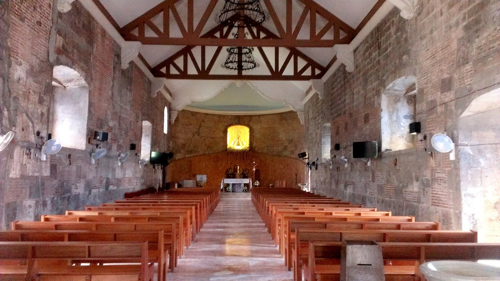
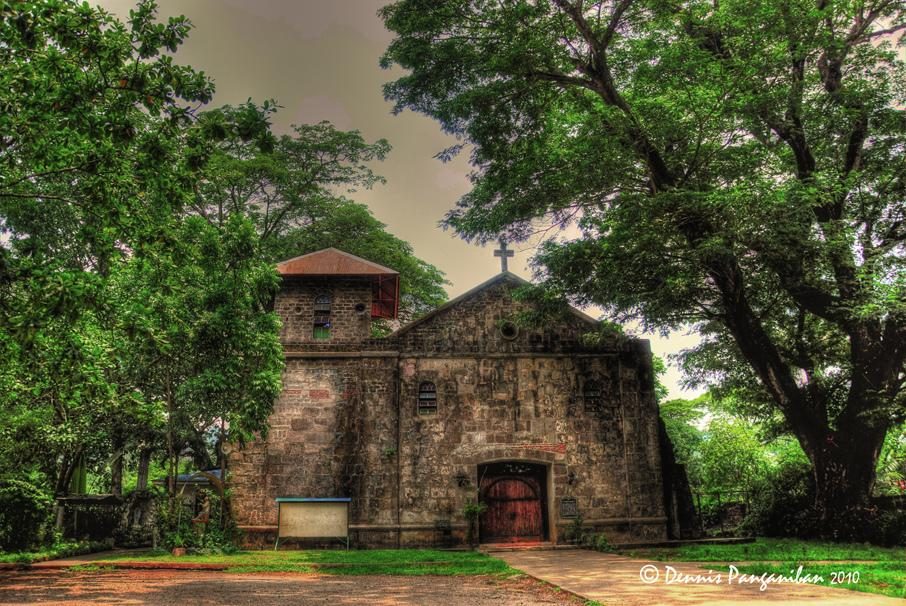
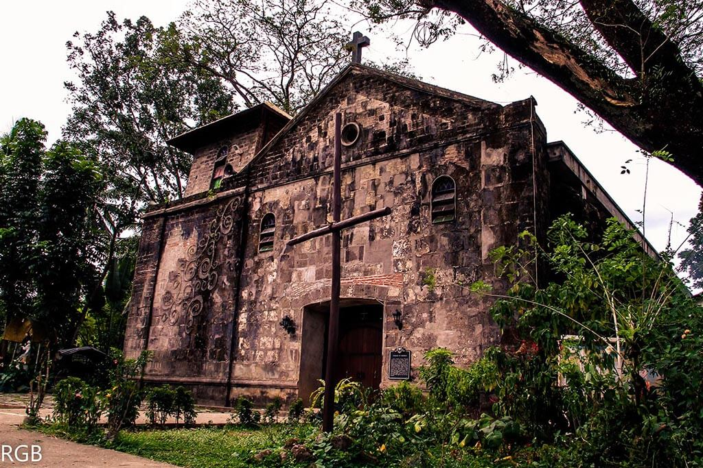

Location:
Brgy. San Jose, Antipolo, Rizal.
Best for: History Buffs, Photographers, and Heritage Lovers.
Vibe: Ancient, Quiet, and Resilient.


Boso-Boso Church
The Resilient Ruins of a 16th-Century Jesuit Mission.
The Boso-Boso Church stands as a hauntingly beautiful remnant of the Spanish colonial era. Originally built in the 1500s, this stone church has survived earthquakes, fires, and wars, remaining a powerful symbol of faith and endurance.
Brgy. San Jose, Antipolo, Rizal.


